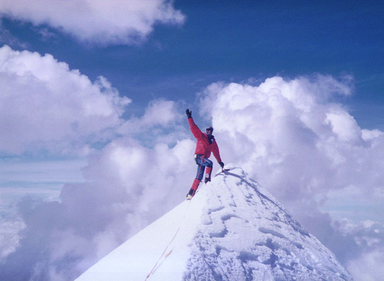

JOHN HESSBURG, U.S. DIVE TRAVEL founder, offers SUNNY GREETINGS to our NEW CLIENTS:
ARE YOU SEARCHING for an EXPERT TEAM
of TROPICAL VACATION PLANNERS?
We are confident you'll be delighted with our island destinations,
our snorkeling & scuba diving packages & our customer service.
We've been there, done that & we'll make sure it happens for you. |
|
Got a dream? Well let's make it happpen! Any island you can dream of, wherever your spirit leads you; we are trained & ready after more than three decades of leading adventures in 30+ tropical countries -- to help you turn those dreams into rockin' reality. Before such a major decision, we appreciate that you'll need to know a lot more about your destination, your options -- & your travel planners. Info -- that's the ticket -- straight up with no hot air.
Information is power, pure and simple. And we do believe the power belongs to you, the
dive vacation guest. What's more, you have a right to know as much as possible about the people who
will help you plan this trip -- by refining + defining your vision into a safe and
affordable reality. Therefore, to better make our company -- U.S.
DIVE TRAVEL / Live-Aboards.com -- an open book for your thoughtful review, this professional adventure
dossier was prepped to help our guests answer all these key questions:
- "So, just who are these folks at USDT / Live-Aboards.com? To whom are we entrusting our tropical
travel plans, and our payments?"
- "What kind of international travel experience does USDT have, to
help organize my trip in life-positive ways I may not have considered myself?"
- "Have they first-hand experienced special tropical island locales I haven't seen yet? Might they
offer some seasoned insights into helping me maximize my economy, safety, comfort & enjoyment?"
Whether you book a "do-it-yourself" trip, one of our
guided dive-yacht vacations with Live-Aboards.com, a customized exploratory tour with Wild Island Expeditions, or a regular week's dive trip at a fun resort, this information will help you make your decision
in an expertly-prepared & stress-free manner.
Following is the adventure travel profile of the man who carries the
prime responsibility for overseeing your customer service, your satisfaction
& your personal security overseas -- John Hessburg -- founder of U.S.
DIVE TRAVEL & Live-Aboards.com.. This detailed r�sum� covers many highlights -- but not all -- of John's wilderness adventures
in the mountains, on & under the ocean, in trackless deserts & deep jungles in far-flung regions around
the world since 1970. Several of the most remote explorations have been kept off this list -- a matter of ethical choice -- to protect sensitive wilderness sectors that are vulnerable to tourism impact. But many of the most memorable adventures still made the list.
Bottom Line: at USDT the buck stops here. So we invite you take a few minutes, & meet the guy who signs the contracts & musters the team around here. John is so hyper-focused on planning details + safety for our clients that (when he's out of the room) we like to call him (yes he's a full-tilt Type-A) -- "Mr. Relaxo."
© Copyright U.S. DIVE TRAVEL Network.
JOHN HESSBURG
Founding Partner, Senior Expedition Guide
Live-Aboards.com
Wild Island Expeditions
& U.S. Dive Travel Network
PMB 307 -- Suite #116
15050 Cedar Ave. South
St. Paul, MN, U.S.A. 55124-7047
Reservations Office: 952-953-4124
E-mail Address:
divetrip@bitstream.net
Website Home Page:
www.usdivetravel.com
Click here to view John Hessburg's
professional dossier & Linked-In Profile.
|
 |

SCUBA DIVING + FREE DIVING
NEW CALEDONIA: Grande Terre & Loyalty Islands, Southwest Pacific --
- Hiked beaucoup beaches, ran photo shoots in jungle villages, toured the vast island of Grand Terre, main isle of this seldom-visited French colony about 1,200 miles NW of New Zealand. We trekked inland "sand rivers" -- ancient dried-up tidal inlets -- & explored the fringing reefs of Ile des Pins. Renowned for towering Araucaria trees up to 80 feet tall, this Isle of Pines is home to laid-back natives & legions of the deadliest striped sea snakes in the world. They are "Tricot Rayes" ( laticauda colubrina ) & are remarkably shy though lethal critters. By night, we crossed the Big Blue more than 120 nautical miles from Ile des Pins northward to Mare island, on the skirts of a vicious typhoon south of us, which stirred huge swells, topped by heavy right-angle chop. Whoa Nelly. Most brutal crossing ever. After that, 2 weeks in the Loyalty Islands brought some of the most exhilarating reef dives & jungle jaunts of a lifetime. These New Caledonia island explorations were a picture-perfect trip -- blessed with calm clear weather, mild humidity, hospitable villagers everywhere we turned, endless life-rich reefs, & sunsets gleefully splatter-dashed across the sky in eye-candy tones of molten copper with stained glass blues that segued first to police-strobe blues, then nearly-audible indigos -- all of it splashed by some wanton Jackson Pollock in the stratosphere. Astonishing beauty everywhere: in the island foliage, flowers, village children playing, marine life darting about expanses of coral. The free diving was wonderful, a fun kaleidoscope of species, especially off Lifou island. All explorations in NewCal were shared with "herzliche Freunden," our new friends Fred Looijschelder (Netherlands) & Christiana Kaluscha (Germany), who were world-class sailors & navigators. -- June & July 2001.
- Fred & Christiana's beautiful 110-foot teak-decked schooner originally was built in Europe & owned by a royal family, then sailed halfway around the world to their SoPac homeports in Vanuatu & New Caledonia. Our 6-person team explored virgin reefs & seamounts -- likely never visited by North American or European divers before us -- for about 200 nautical miles surrounding the Loyalty Islands of Mare, Lifou & Ouvea. Our NewCal Expedition circumnavigated most diveable shores of these magnificent islands, mapping & logging many new scuba diving & snorkeling sites, trading for whole foods with native villagers, witnessing rare religious dancing rites at night, relishing some of the most untrammeled reefs in the South Pacific. Climbed about 200 feet up the face of a bizarre "Jackie-O Pillbox Hat" formation -- a cylindrical tower of millennia-old minerals thrust skyward by plate shifting -- near the village of La Roche on Mare island. Blanketing the summit of this coral & limestone oatmeal box are centuries of living & dead vines, creeping kudzu-like foliage & storm-woven sticks, forming a treacherous mat over crevasses up to 100 feet deep. If you stepped imprudently, these hidden holes could suck you into oblivion in one eyeblink, while your buddy was looking the other way. You'd never surface 'til the Second Coming. Had to mince gingerly across the summit, while several veggie/stick mats snapped under our weight as we leapt for life onto the next jagged knob.
- Later, was handed ship's helm duty for 2 days, 25 nautical miles per day, as we sailed happily, engines off, in ideal sun & lazy winds around most of Lifou Island, next gem west of Mare in this wild archipelago. (Ouvea is further west). Found one reef plateau a mile offshore of Lifou, in less than 45' of calm seas, teeming with vivid species -- jewel-like shells with extra-terrestrial shapes, dazzling schools of li'l fish flitting about, corals of every hue. Some species we had never seen before in the South Pacific. Perhaps a taxonomist's dreamscape? ( Forgive us sunseekers; we'll never publish the GPS #s. ) This one's not for sale. Glory be -- what a magical time... days of wit & whimsy, artful conversations in a rapid-fire melange of French, Spanish, German & "Franglais," frequent piquant puns, waves of laughter, flagons of fine French wine with fresh fish suppers nearly every day. (Our enterprising cook had a couple baited lines dangling over the gunwales every afternoon; & she scored no less than one meaty lunker a day!) Best pun of the trip was a play on the French word for bread -- " pain " -- pronounced "pan." Irked by the scarcity of fresh bread in all villages of Ile des Pins (pronounced "Eel da Pan"), we dubbed that island " Ile de Peu Pain. " Ah... this Isle of Little Bread aside, there were so many perfect days.
- Then "that pesky reality" intruded .... Inexplicably, our master mariner friends lost their beloved schooner about 3 months after our successful expedition concluded, when they sailed from Vanuatu to SE Australia. Their written report to USDT stated that a savage storm 100 miles off the coast of Sydney snapped both masts & toppled them, crushing the vessel's hull. Aussie coast guard mounted a swift rescue; all hands saved. Our hearts go out to Fred & Chris. In one sudden moment, smacked by Neptune's random wrath, they lost their home, their livelihood, their South Pacific dream. But they are still sailing the SoPac, crewing yachts again we've been told, pressing on with inexpressable courage. Fred & Christiana are strong, resourceful & gifted with keen creativity. They are beautiful human beings & will never be forgotten. " Asi es la vida, che'. Nunca se te regala nada gratis. "
The SULTANATE of OMAN, Arabian Sea, Southwest Asia:
- Wrapped up in vast schools of horse mackeral, hundreds of them swimming with
mouths gaping greedily like baby birds, as they filtered plankton at a classic Omani dive site near Muscat -- Fahl Rock. Played & free dived for an hour with four healthy blacktip reef sharks on the back side of Fahl Rock, about 2 miles offshore. They were at times less than 10 feet from our hands, blissfully unafraid of divers. This was an inspiring experience.
- Also enjoyed close encounters with huge 7-foot honeycomb eels at
Mermaid's Cove in the fabulous Bandar Khayran region, about 20 km SE of Muscat. The "viz" is not spectacular, much like Costa Rica, but the critter size & profusion is amazing. Life is abundant & always on the go. All Oman adventures with Brit adventurer Rob Gardner, a pensive man who's strong & hard-working. Sixty-something Rob is a wild-hare harrier who trains with a spirited expat hash club in Muscat. Get this: their preferred kicks during the sweltering summer months is to race 4-6 miles pell-mell through the desert dunes of Oman, long after nightfall, dodging ditches, cacti & HUGE camel spiders. Rob is a Renaissance Man who loves diving, climbing, caving & "wadi bashing" -- driving up dry mountain riverbeds in a Land Rover. Rough 'n ready outdoorsman. Our kind o' dude. November 2000.
- Please refer to our Oman Diving webpage for more details on the delights of scuba diving in this sunny Sultanate of Oman, from the world-famous Daymaniyat Islands to Cemetery Bay.
KINGDOM of TONGA, South Pacific:
[Five weeks in January &
February 1992 / Exploratory diving expedition. ]
- Explored new sites at nameless reef, 11 miles north of
Tongatapu Island in the open ocean
(depths to 80'). Helped a native spear fisherman wrestle a writhing 75-pound trevally
fish up to the vessel from 70' depth, in heavy surge at the rim of a seamount
reef. Uncharted drift dives in serious current.
- Explored magnificent new site near 'Eueiki
Island, Tongatapu Group (depths to 65'). Found sunken volcano
crater, stadium size, with scores of coral heads inside & white sugar-sand
bottom. Dolphins cavorted at surface & large yellowfins schooled below.
Outside crater rim, steep walls dropped into a blackwater abyss. Visibility
150'. We named the site "Elysian Fields."
- Explored two-plus miles of reef along Piha
Passage, three miles north of Tongatapu (depths to 85'). Found
manta ray with hitchhiker remora, pair of seven-foot whitetip sharks in
cave, clusters of rare black coral trees, some up to eight feet high. Overwhelmed with joy at
seeing underwater vistas in Tonga no divers ever had experienced. The lure of virgin exploration is
an eternal intoxicant, an addiction never to be cured -- the joy of our lives under heaven.
- Ualanga Lalo Reef,
four miles north of Tongatapu in the open ocean (depth 105').
- Near Vava'u Island in
northern Tonga, classic dive sites included: Hunga Magic (70'), Mariner's
Cave at Nuapapu Island (50'), Swallows Cave at Kapa Island (40'), Tu'ungasika
Island (65'). Explored new dive site near Vava'u Island's Fata Point (55').
The Vava'u Group's waters are rich in iridescent-lipped giant clams, shy
lionfish & sea snakes, exotic jellyfish & nudibranchs, & spectacular
ancient sea fans 6-8 feet tall.
VAVA'U ISLAND GROUP
[Three weeks in June & July
1992 / Exploratory diving expedition.]
- Pristine cave & tunnel dives on leeward shores of
rock islands in Vava'u Group: including Shark
Tooth Cave (depth 62') off northeast corner of Kitu
Island , where we cavorted with small reef sharks that hid under
ledges. Visited classic sites discovered by Patty Vogan & other divers
on earlier trips.
- Explored new cavern we named "Not-So-Tubular
Cave," a winding 120-foot tunnel (depth 15') on the western
coast of Nuapapu Island, with tight
limestone passageways, many secret nooks & brilliant red squirrelfish
darting in & out of crannies. Vast beds of virgin staghorn coral ruled
the sea floor outside the cave (depths to 85').
- Explored new diving sector off western coast of Hunga
Island, several acres that featured two arches at 60' lined
with lush yellow-gold soft coral -- "The
Golden Arches." Found a hidden entrance at 69' depth, dubbed
"Doorway 69," guarded by
sea fans & leading to a perfect cylindrical throat in the rock, 7'
diameter, 30' high, lined with colorful sponges, tiny sea fans & waving
soft corals. Named this spectacular location "Resurrection
Tube." Saw large emperor wrasse, banded sea snakes, &
a huge gray reef shark who began a territorial display with aggressive
swimming loops. We kicked quickly away, keeping eyes on the shark at all
times until he disappeared.
- Explored another new reef site off western coast of Hunga
Island. Drifted about one third mile from "Aquarium
Gullies," a series of channels (depths to 60') & rolling
ridges laden with colorful reef fish, northward to "The
Round Table," a huge round rock plug that rose from 55'
to 22', topped with vivid coral heads & rimmed at bottom with a wide
racetrack ring of perfect white sand. Odd & rare sponges, schools of
slate-blue & crimson reef fish abounded. Pure unmitigated magic.
- Dove narrow tunnel that transects all of Fotula
Island underwater. Tunnel starts at 90' & slides gradually
to 110' depth. It is lined with whip coral, sponges & soft corals.
Sometimes houses a huge grouper or several whitetip sharks. Colony of shy
cobra-like sand eels swayed at the deep end like an extra-terrestrial orchestra.
This site also was discovered by Ms. Patty Vogan.
- Explored a half mile of undived shoreline off southwestern
coast of Vava'u Island. Discovered
delightful new wall that plunged from 45' to about 130' -- a steep rock
face with many intriguing ledges, caves & tunnels. U.S. Dive Travel team leader named site "Blue
Fugitive Wall" after cluster of tiny neon-metallic blue
tangs that wriggled in panic through the whorls of a cauliflower coral
cluster. Large wrasse & parrotfish flitted everywhere.
- At top of wall was quarter-acre of 3-foot rock knobs,
with shallow bowls among them. We named it "Moon
Craters." At north end of Moon Craters was a forbidding
black wall that plunged away into a lightless abyss. USDT's John Hessburg named this uncharted site "The
Infinite Wall."
KADAVU ISLAND, Far Southern FIJI ISLANDS, South Pacific:
- On the world-renowned Astrolabe Reef
along the primitive & pristine Southern Shores of Kadavu, in a 30 km stretch between the isthmus near Vunisea eastward to the first bay east of Kadavu Koro village, with dive buddy/skipper Joeli "Joe" Tuku of Matava Resort, explored coral bommies, cuts & passages via free diving in strong currents, as typically are the case on this windward exposure of Kadavu. Foremost sites we dived were Soso Passage (6 nm west of Matava), Vesi Passage & "Dreamland" shallows (1 nm east of Matava) + Koro Levu Passage (1.5 nm east of Matava). Visibility up to 100'. Powerful surge & cross-shore currents in all the passes, except for an hour at slack tides. We saw abundant small healthy reef sharks, mainly whitetips, schools of feeding pelagics along the outside walls (yellowfin, 'cuda & jacks prevail) & in Dreamland the soft corals & smaller species were brilliant. Some oceanographers are gathering data they believe will prove much of the coral-polyp "seeding" that in spawning times repopulates Fijian waters for hundreds of square miles to the north, may originate in the healthy prolific soft corals of Kadavu's Astrolabe Reef. This is one of the most brilliant & colorfully healthy barrier reefs we've ever experienced anywhere in the Pacific. April 2009.
VATULELE ISLAND, Far Southern FIJI ISLANDS, South Pacific:
- On the western & NW shores of Vatulele Island
approx 40 miles south of Viti Levu Island, at a classic site called Turtle Mountain, free-diving with expert local OWSI Orisi Vulibulu of Vatulele Island Resort, we spent approx 3 hours tooling about the outer rims of walls just 300-400 meters offshore, enthralled by a large school of whitetip reef sharks in a feeding frenzy.Visibility up to 120'. Their numbers swelled as time went on, until the group was twitching, circling & tussling violently, in search of what appeared to be a wounded sea turtle that had found refuge under a tight rock shelf too narrow for the sharks to probe or enter. We wondered how long that poor turtle could hold out, holding his breath, & we rooted for him though he was hopelessly outgunned. At one point, the sharks got so frenzied, we simply had to move locations, as they were a mere 10-12 feet below our chests. Too close for comfort, en fin. Never did learn what fate befell that dear ol' sea turtle. Hope he made it to surface & swam away to the shallows, out-lasting those writhing, ravenous whitetips. May 2009.
MATANGI PRIVATE ISLAND, NE FIJI ISLANDS, South Pacific:
- Spent one delightful afternoon free-diving just before, during & after a providential slack tide in the normally briskly-running channel NNE of Matangi & Qamea islands.
Accompanied by the lively & talented Matangi Resort's Ms. Ally Heffernan, a PADI / OWSI, we dived these Fijian classics: Yellow Wall, Noel's Wall & Veranda II. Visibility up to 120'. The 1,000' precipitous dropoff of Yellow Wall 7 km NNE of Matagi Island offers abundant corals & small reef fish near the lip down to 70'. Approx 10 km NNE of Matangi, Noel's Wall, named after Matangi Resort's gracious patriarch Noel Douglas (whose family has owned Matagi Island for nearly half a century) regaled us with whitetip reef sharks, silver barracuda, breath-takingly vivid purple acropore corals, plate corals the size of Chevy pickups, bright orange & violet anthias & huge healthy brain corals. The El Ninos of the last 15 years have done precious little harm to this Soft Coral Bastion of the SoPac. The reefs & walls are still resplendent! At slack tide the 3 Verandas near Matangi Island's northern shoreline offer superb shallow snorkeling & free diving, with scores of super-healthy hard & soft coral species & perhaps 100+ species of small critters. One of the best soft-coral & small critter days of the last 20 years. Matangi-area corals are still in excellent shape, & thank God have escaped the devastation that global warming is inflicting on many of the SoPac's barrier reefs & atoll rims. May 2009.
TAVEUNI, Central FIJI ISLANDS, South Pacific:
- On the spectacular Rainbow Reef
in Somosomo Strait, between
Vanua Levu & Taveuni islands, dove many sites vibrant with wild hues
of purple, orange, red, yellow, blue & green. Foremost site was The
Great White Wall, lined with magenta soft coral that seemed
whitish when viewed from a distance. Visibility up to 120'. Powerful drift
currents gave exhilarating rides. Many caves, tunnels, arches. Saw billowing
schools of blue yellow-tailed fusiliers (depths to 90').
- Among the most beautiful sites along Rainbow Reef (depths
40-85') were The Pinnacle, Annie's Bommie, Nuku
Reef & Yellow Tunnel. Saw
huge bristling lionfish, many species of exotic nudibranchs, immense clouds
of reef fish enveloping divers in living color. Current at surface often
3-4 knots, with powerful mask-tugging currents even at 70-90'. To navigate
at maximum flow, had to claw along bottom from one dead coral or rock knob
to another. If divers' bodies accidentally tipped out of a perfect "flying"
position, the current would tumble you wildly.
- Dove Barracuda Hole (depth
82') & saw several hefty barracuda, a 7-foot gray reef shark that bolted
from our regulator bubbles, & ribbony black nudibranchs with golden
fringes. Stellar critter action.
- Multiple dives at Blue Ribbon
Eel Reef, (depths 40-55') where we saw a perfect specimen of
the delicate blue ribbon eel, flaring its tiny gaping maw at divers. This
is among the rarest & most exquisite eel species in the Pacific. Enjoyed
countless clusters of unblemished soft & hard corals, in colors from
cream to orange to fuchsia to red. Huge plate corals & staghorns abounded.
Baby lionfish, beautiful & deadly, were hiding in rock nooks, everywhere.
July '92.

© Copyright Susan Hessburg, USDT. (John Hessburg, summer free-diving at Shark's Cove on Oahu's North Shore.)
NIIHAU, KAUAI, OAHU, MAUI, the BIG ISLAND,
MOLOKAI &
LANAI, in the HAWAIIAN ISLANDS.
- On one trip to Niihau,
Hawaii's "Forbidden Island" owned by the powerful & secretive
Robinson clan, we explored 5 miles of the eastern coast from Pueo
Point north to Lihua Rock.
Found wonderful new dive sites off windward northeastern corner of island.
Niihau's eastern shores are pounded by heavy waves & surge most of
the year, except for infrequent (& coveted) windows for a few weeks
in late summer. To dive windward Niihau is an exceptionally rare treat.
This is likely the wildest, most virgin reef environment left anywhere
in Hawaii. Itís a scuba adventure unmatched in the Hawaiian chain.
Trip buddy was Robert Buffington Shaw, aka "Bonz". August '92.
- On more than 25 separate trips to Oahu island,
vessel & shore dives included: wreck of the minesweeper Mahi (90'),
Makaha Caverns (60'), Ulua Cave (80'), Electric Beach (30'), Rainbow Reef
off South Shore (25'), Port Lock Point at Koko Head (65'), Shark's Cove near the North Shore (45'), Hanauma Bay,
the Mokulua Islands off windward Lanikai, Flat Island off Kailua Beach
Park, the reefs off Ala Moana Beach Park & numerous other sites. After safe decom periods following dive days, many day hikes up to summits in Ko'olau Mountains of Oahu. Incredible exposures of 600-800 feet on flanks of ultra-skinny ridgecrest trails, at some points. Very cold & windy enough on slippery moss & vines to create adrenal footing. Must keep your wits on full-alert in these hills. Ornery wild pigs abound in back country of Oahu, & on Kauai too. Cool. Most Hawaii dive trips taken with wife Susan Hessburg + sons Jack & Bo.
April '90, March '91, September '91, September '92, September
'93, October '94, October '95, Oct. '96, June '97, May '98, March & April 2000, May 2002, June & July 2003, May 2005, July & August 2007, July & August 2009, July & August 2010, June & July 2011, June & July 2012, April 2014, June & July 2014; December 2015 & January 2016, January 2017.
- On four trips to Kauai,
dives included: Turtle Hill (85'), Fast Lane (90'), Zack's Pocket (95'),
Kanaka Nui Reef (65'), Sheraton Caverns (60') & other sites near Hanapepe
Bay & Makahuena Point. Many encounters with huge turtles & morays.
October '91, December '91, August '92.
- On four trips to Maui, dives
included Molokini Crater (60') & Southwestern Maui shore dives to see
the giant sea turtles that thrive in those waters (depths to 35') September
'93, October '96, March & April 2000, May 2005.
- On two trips to the laid-back & pristine island of Molokai,
explored many miles of remote beaches, shore diving sites, snorkeling beaches, wild highland ridges & back-country trails, by way of aerial photo sweeps, day hiking
& 4-wheel drives. We spent a full day exploring the world-renowned Kalaupapa Peninsula on Molokai's north shores, made famous by Father Damien, who cared for generations of Hansen's Disease patients -- all of whom were cured fully, in the end. This island offers more than 26 miles of continuous virgin fringing reef & hundreds of unexplored diving sites. More tropical fish, big pelagics, sharks & exotic species live in Molokai's waters than anywhere in the State of Hawaii. Molokai no ka oi. September '93, July 2003.
- On two trips to the private & secluded luxury island,
Lanai, explored remote wilderness beaches,
back-country trails, & dived classic sites off the southern shores. There was one lifetime-memory encounter on
a free dive near the Cathedrals, face-to-face with a pug-nosed eagle ray, only 2 feet apart for 30 seconds -- stellar! The dive sites included The Cathedrals, Sergeant Major, Sergeant Minor. October '94, October '96.
- On four trips to "The Big
Island" of Hawaii, explored scores of backroads, &
shore diving sites along the South Kona Coast, the Kohala Coast, plus trails
& highland sanctuaries from the Kohala Mountains to the Laupahoehoe
Coast to the hill country of Mauna Kea & Mauna Loa volcanoes. Outside
of Irian Jaya / Papua New Guinea, this magnificent island may be the most
geographically diverse anywhere on Earth. Favorite haunts include: huge crashing waves at South Point; diving with friendly sea turtles at Spencer Beach Park, snorkeling at Kahalu'u Beach Park inside the ancient Hawaiian fish-trap lagoon; treks to the black-sand & green-sand beaches; driving the windswept cliffs of the Hilo coastline in early sunrise glow. Da kine Beeg Eye-lin is a pearl that only glows more brightly with time (no reference to Kilauea's lava fissures intended). March '90. November '95, May '98, July '07.

© Copyright John Hessburg, U.S. Dive Travel. ( The Mokulua Islands of windward O'ahu -- where USDT keeps strong spiritual roots.)

John with sons Jack & Bo at Makapu'u Ridge Trailhead, Oahu island, prepping for moonlight hike to lighthouse.
© Copyright Susan Hessburg, U.S. Dive Travel Network. All Rights Reserved.
The BELIZIAN BARRIER REEF,
Central America
- On the islands of Turneffe Atoll, enjoyed
several days of free diving, drift diving, photo shoots. Viz was superb, water warm, weather breezy & delightful. Very few skeeters & sand fleas. Locals friendly to a fault. Small fish galore, not too many big 'uns. Dec. 2005.
The BAY ISLANDS of HONDURAS,
Central America
- On the island of Roatan, enjoyed
relaxing shore dives along the famous South Shore "CocoView Wall"
(depths to 45'). Saw a small manmade wreck, many odd little crannies inset
into the wall where reef fish, lobsters & colorful corals thrived.
This water is calm, warm & easy for divers seeking a relaxing
escape. Nothing special though. Touristy to the max. Sad to say, luster dead and gone. This island is a bloomin' bummer now. April 1994.
- On the island of Guanaja, dove several shallow sites (30' - 75') along the
southern barrier reef from Short Stop to Southwest Caye to Gorgonian Wall. Guanaja has some of the largest & most vivid
barrel & tube sponges, plus hard corals, anywhere in the western Caribbean.
Scores of small & brightly colorful marine organisms populate the corals. To pause
& scan corals from a few feet above while B.C. "hovering,"
revealed amazing creatures from colorful nudibranchs to shrimp. Saw a huge
grouper inadvertently chew a native lad's thumb, as he
teased it with raw fish shards. 10 days in May 1994, solo. One week in June 2013 with son, Jack, & associate Doug Poulin.
COZUMEL, Mexico:
(Muchos) drift dives at these classic sites, again with Bob "Puffer Fish" Shaw: Palancar
Wall (90'), Palancar Gardens
(80'), Santa Rosa Wall (100'), Tormento
Reef (65'), Colombia Wall
(95'). Visibility 120-150'.
AITUTAKI ATOLL, COOK ISLANDS,
South Pacific:
Free dives at coral heads near lagoon's rim, in stiff
surge, searching for giant moray eels. Helped native crew capture one 100-pound
specimen, after a 3-hour battle to extricate it from its crevice in a coralhead.
Found many giant Tridacna clams. Scared up a school of 7-foot manta rays who swam in "aerial formation" overhead, blocking the sunlight for a crystal moment.
The deep, almost hypnotically rich turquoise-aqua blue of Aitutaki Lagoon
ranks this atoll easily among the most beautiful in the South Pacific,
travel writers agree. This place will mesmerize you. It's why Susan & John Hessburg
quit their corporate jobs & founded U.S. Dive Travel. March 1990.

© Copyright U.S. Dive Travel Network. All Rights Reserved.
CLIMBING EXPEDITIONS
The ANDES of BOLIVIA
(April, May & June 1989)
Led eight-man U.S. expedition -- right-hand men were Seattle's Pete Delmessier & Eddie Boulton -- to uncharted sector on eastern
flanks of Cordillera Real (Royal Range). Three-day approach trek, herding
49 llamas with 2,200 lbs. of food & gear over three 15,000'
passes. Explored two virgin high valleys of Chearoco-Chachacomani massif,
a key geologic thrust of the Central Andes. We were the first
non-indigenous people to explore these magnificent valleys, as pristine
as they were millennia ago. Base camp was set at 14,100'. Three high camps:
two at 16,400', one at 15,300'. Strict environmental protection enforced at all
camps. Team hauled out every scrap of refuse that was not burned.
In the 6 weeks we camped & climbed above 14,000 feet, we left
virtually zero discernible evidence of any human visitation.
In periodic contacts with Aymara Indian villages miles down the valley, we
established friendly trading partners, & bartered for mutton, raw quinoa grain & sacks
of Andean potatoes, our favorite staples.
- Chachacomani (19,902').
Led first ascent of Northeast Ridge via northern icefall approach. Cruxes:
two days of hard route-finding through 1.5-mile serac field, several steep
ice pitches. Perfect conditions: cold, clear, no wind. Team of five made
summit. [ Grade II+ ].
- Dome II (18,721').
Led first ascent of Southeast Face, second ascent of peak. Cruxes: 400'
50-degree neve wall, 70-degree ice pitch over crevasse, thigh-deep snow
on summit ridge, near avalanche, night descent over exposed, narrow ice
bridges. Three climbers made the summit. [ Grade III ].
- Chearoco (20,072').
Attempted new & difficult Northeast Face route. Reached about 17,000'
with one partner. Weather good; turned back by hazardous loose-ice conditions.
[ Grade IV ].
- Huayna Potosi (19,996').
Attempted Southeast Ridge with traverse to North Face. Reached 19,000'
on summit ridge with one partner. Forced down by sleet storm. [ Grade III
].
The ANDES of ARGENTINA
(January & February 1986)
- Aconcagua (22,850')
in Mendoza Province. Member of 10-person expedition to tallest peak in
Western Hemisphere. Three-day approach up Vacas & Relinchos rivers
with mule train. Climbed Polacos Glacier route variation [Grade III]. Reached
high camp on North Face at 20,700' with seven others, after team battled
winds up to 80 mph for three weeks. Four bivouac nights above 19,000'.
Storms & altitude killed 6 climbers from other teams. In this savage
season, few teams reached summit. Ours put 2 men on top.
- Lechuza, Van Titer (each
about 7,200') in Northern Patagonia. Solo ascents of mid-class-5 granite
spires in La Catedral Cirque, each about 500' relief. Descent sans rappels.
- Monte Olivia (4,830')
in southernmost Tierra del Fuego. Solo first ascent of South Face of South
Summit Spire. This 3,500' face is guarded by steep chimneys, loose rock
& a 300' summit pyramid of 5.7 rock, devoid of useful jam cracks &
slippery with moss. Descent in rain & hail flurries. Completed round
trip via pure free climbing -- no rappels -- in 10 hours flat.
VERACRUZ state, MEXICO
(December 1984)
- Pico de Orizaba (18,850').
Member of three-person team on third tallest peak in North America. All
three reached summit via 1,600' rock couloir, then up Jamapa Glacier in
sastrugi ice conditions. From high camp at 13,900' to top & back in
one day. Spent two hours exploring vast crater rim near summit. Headlamp
descent of steep rocky couloir, hours after sunset, was one for the memory
banks.

© Copyright 1989-2014 / U.S. Dive Travel Network. All Rights Reserved.
John Hessburg waves from the cloud-kissed summit of Mount Chachacomani (19,902 feet) in Bolivia's Cordillera Real'.
PRINCIPAL ALPINE SUMMITS
(Unless noted, all peaks in
the Cascade Range, Washington state. A score of strong veteran alpine buddies over the years. Climbs since 1983. )
- Mt. Rainier (14,411').
Reached summit five times + three high climbs to 12,000 feet.
Fourteen all-out bids for summit, including 3 winter attempts.
Routes climbed: Kautz Ice Chute in white-out; Gibralter Ledge in 60 mph winter
winds; Disappintment Cleaver once in perfect summer conditions, second
time in lightning & hail; Fuhrer Finger in ideal summer ice conditions; Emmons Glacier in
clear but windy conditions. While
climbing Kautz Route with two friends, forced into summit crater bivouac atop
Mount Rainier, three men huddled inside a two-person
tent during nightlong ice storm. All three descended safely -- May 1985.
On one Gibralter Ledge descent
in a sleet storm with three partners, forced to dig emergency snow cave
at 6,800' on a cliff edge with high vertical exposure.
Climbing party was one long night overdue. All 4 climbers descended safely -- January
1988.
- Mt. Wilson (14,246').
North Face, free solo on 4th class to 5.2 rock. San Juan Range, Colorado Rockies. Climbing partner Bonz Shaw.
- Capitol Peak (14,130').
Knife-Edge Ridge, free solo on 4th class to 5.2 rock. Elk Range, Colorado Rockies.
- Mt. Adams (12,276').
New route: up Lava Headwall, traversed east across Lava Ridge at 9,500',
one free rappel to upper North Lyman Glacier ice wall & then moderate ice up to summit [ Grade
III ].
- Mt. Hood (11,235').
Climbed this Oregon volcano twice in one weekend: via southern flanks to
Hog's Back & via Leuthold's Couloir. Nearly hit by ice-&-boulder
avalanche in couloir.
- Mt. Baker (10,778').
Three summits: via steep North Ridge ice [ Grade III ], Coleman Glacier,
& Easton Glacier to Roman Wall. Four ice & crevasse
training weekends on lower Coleman.
- Glacier Peak (10,541').
Sitkum Glacier with traverse to SE shoulder. Solo. Two-mile glissade.
- Bonanza Peak (9,511').
Mary Green Glacier to East Face couloirs. Near miss with rockfall.
- Mt. Stuart (9,415').
Ice Cliff Glacier Couloir. Steep. Snow slab broke. Survived 200' roped
fall. Climbing partner Chris Hawkins.
- Mt. Shuksan (9,127').
Fisher Chimneys to summit pyramid. On summit day climbed West Face of pyramid,
5.7 rock, rappelled off East Face, climbed easy rock up south side to summit.
- Forbidden Peak (8,815').
Steep ice gully to West Ridge rock. Descent: North Face traverse.
- Sahale Peak (8,680').
From summit, traversed north on knife-edge ridge, half mile to East Face
of Boston Peak. Snow & ice over loose rock, 2,000' exposure. Grade
IV nightmare. Climbed with Jim Nelson, Seattle.
- Many other alpine summits &
peak attempts in the U.S. Rockies; & throughout the Cascades from
Mt. Garibaldi in southwestern
British Columbia to Jefferson Peak
in central Oregon.
© Copyright 1986-2014 / John Hessburg, U.S. Dive Travel Network. All Rights Reserved.
View from high camp at 20,300 feet on the North Face of Aconcagua, Argentina, during a 1986 U.S. expedition.
At the horizon line, more than 85 miles to the NW, looms Mt. Tupungato in Chile, while Pacific clouds scoot by
in a dark line just beneath the white layer. The Pacific Ocean is more than 120 miles west of Aconcagua's peak.
ROCK CLIMBS: Big Walls & Crags.
-- On dozens of trips since 1983, led many
routes, mostly 5.8 - 5.9, in these crag areas:
- Squamish Chief: near
Vancouver, British Columbia. Wall routes on Squamish Apron include 5-pitch
"Diedre" (5.8 dihedral), 6-pitch "Snake" (5.9 dihedral
& face). Routes at Little Smoke Bluffs include "Popeye & Raven"
(5.10d face), "Penny Lane" (5.9 crack), "Split B" (5.10b
off-width crack). At Grand Wall -- "Exasperator" (5.10a crack),
"Dream On" (3-pitch 5.10d slab).
- Snow Creek Wall: near
Leavenworth, Washington. Wall relief 800'. Led 7-pitch "Orbit"
(5.8 crack & face) Led 8-pitch "Outer Space" (5.9 crack &
face). Both Grade III Cascade classics.
- Icicle Canyon: near
Leavenworth. Scores of granite cracks & face routes along canyon road.
- Peshastin Pinnacles: Many
routes on sandstone slabs in Cashmere, Washington.
- Royal Columns & The Bend:
Basalt pillars near White Pass, Washington on Tieton River.
- Powerline Wall: Good
training face at Mt. Erie near Anacortes, Washington.
- Hag Crag: Granite
bulge near Lower Town Wall at Index, Washington.
- Garden of the Gods: Classic
red sandstone crags near Colorado Springs, BEFORE the rock climbing prohibitions were passed.
- Red Rock Canyon: Spectacular
sandstone walls near Las Vegas, Nevada.
© Copyright 1986-2014 / John Hessburg, U.S. Dive Travel Network.
All Rights Reserved.
View of the forbidding North Face of Monte Olivia in Ushuaia, Tierra del Fuego, Argentina. South Summit Spire is snow-clad.
John's climbing partner that summer day in 1986 abandoned the climb, so he free-soloed, no rope & no protection, from sea
level to the South Summit Spire, 3,500 feet gain, round trip in rain, 10 hours. Was 1st free ascent of the spire's South Face.

© Copyright John Hessburg, USDT Network. (Trek bro Bob Shaw takes 5 at 12,000 feet, West Face, Wheeler Peak, northern New Mexico.)
WHITEWATER & VOYAGEUR
CANOE TREKS
- Apostle Islands, Lake Superior: Three days sea kayaking, 2 boats & 4 men moving about 60 miles total among these protected wilderness islands. Fellow lake smackers were Bob Shaw, Marcus "Trunk" Magnuson & Grant Moos. Relished the absolutely pure campsites & ideal summer weather for 2 days. However, on final morning a serious storm kicked up, & we crossed a 3-mile channel back to the mainland in 5-foot crashing whitcaps & 25-knot headwinds with lightning strikes south of us for hours, just a hair away from capsizing in the frigid waters of Lake Superior. Hard to categorize, but this may have been one of the least pleasant survival epics of a career. Two words: NEVER again. Two more: Man alive .... August 1998.
- Quetico Provincial Park: Pristine
canoe wilderness in Southwest Ontario, Canada. Four persons in two canoes
completed 75-mile loop in remote Jane Lake sector. Many long, rock-scramble
or swamp portages; three half-mile & two one-mile portages. These portages were intense bushwhacks at
times, or tough thigh-deep slogs through heavy swamps some days. Best canoe trip of a lifetime! Again with lifelong friends Marcus Magnuson, Bob Shaw & Karl Ketchum. August 1990.
- Boundary Waters Canoe Area: Northeastern
Minnesota panhandle. Four persons in two canoes completed 30-mile loop
in Lake Insula sector. Portages up to half mile. Stiff head winds &
cold driving rain ruled most of the trip. Trip buddies included Jay Elder & Doug Smith, friends for 40+ years. August 1986.
- Westwater Canyon, Colorado River: Eastern
Utah. Three persons in small Avon raft -- Bob Shaw & Laurel George too -- shot 17 miles.
Whitewater up to Class IV, including Skull Rapid, a half-mile stretch of
powerful hydraulics. September 1983.
- Vermilion River:
Northern Minnesota. Two persons in decked canoe shot
25 miles. Rapids up to Class IV, heavy spring flow. Capsized at crest of
200-meter Class IV slide & thumped down it at 4-5 knots upside-down,
trapped inside the canoe's spray skirt. Righted canoe at bottom of rapid,
unhurt. Yep, another kiester-kickin' Bonz Brothers Production with Robert Buffington Shaw. "Bonz" was canoe partner on nearly every whitewater river trek throughout the 1980s. May 1981.
- Upper & Lower Snake Rivers:
Central Minnesota. Two persons in open canoe shot
40 miles. Enjoyable slick-shooting rapids up to Class III. April 1980.
- Root, Cannon, Upper St. Croix & Kettle
rivers: Minnesota & Wisconsin.
Many two-person open-canoe training trips of 15-20 miles in one day. Rapids
up to Class II. Summer runs from 1979 to 1981.

© Copyright Marcus "H-Badger" Magnuson. (Three of John's four best adventure pals on Planet Earth, at Walter Lake camp; from the right --
Marcus Magnuson, Robert "Bonz" Shaw, Carlton "Kant" Ketchum -- Aug. 1990, Quetico Wilderness. Our bro Grant Moos didn't make this trip.)

© Copyright Marcus Magnuson. (John Hessburg & Bob Shaw peel out from another
glorious 1-mile portage in Ontario's pristine Quetico Canoe Wilderness, Aug. 1990.)
OTHER ADVENTURE SPORTS
- Eco-Trekking & Photo Shoots in Belize & Guatemala Interiors:
including delightful hiking tours of the ancient Mayan Tikal Ruins in Guatemala; the Caracol Ruins & Xunantunich Ruins in Belize; Mountain Pine Ridge Forest Preserve, Rio on Pools Park & "Thousand Foot Falls" in Belize (saw jaguar dash out to road near our car, then pad nonchalantly away !); horseback riding on private lands in San Ignacio hills of the Cayo District in Belize. December 2005.
- Highland adventures in Oman, Arabian Peninsula:
including serious canyoneering trek down about 6 km of a wilderness mountain gorge called Upper Wadi Bani Khalid in the Hajar Mountains; + desert camping in the northern reaches of the Wahiba Sands; + descent into Al Fallah / Al Hota Cave in the Hajar Range; + exploring ancient Arab forts in the Omani interior. Megawatt mountain buddy was Rob Gardner of Muscat. November 2000.
- Countless mountain hikes & treks in North America, South America (from 2-8 days on trail):
Hikes & treks from 1970 to present. Nearly always with only 1 partner to move light-'n'-fast; up to 25 miles a day with 60-75 lb packs; sometimes 4k - 6k elevation gains daily. Among most memorable adventures, back in the wonderful days of un-PhotoShop-able E-6 slides, were these gems: many moderate hikes around "El Mastil" peak, Los Cocos & La Cumbre in Las Sierras de Cordoba, Argentina, July 1970 - June 1971 while on Rotary Scholarship; hundreds of cumulative miles, many days intense bush-whacking, with chainsaws, adze-eye hoes, pulaskis & old-fashioned dynamite, on DNR crew of with 11 Con-Rec Corps "Newts," building 3.7 miles of Mount Si Trail near North Bend, WA (now the most widely-used mountain trail in the North Cascades), Oct. '72 - April '73; Glacier National Park in July 1976; Paradise Valley in Banff, Alberta region + Columbia Ice Fields near Jasper, 2 weeks in August 1978; Superior National Forest + Baptism River Trail + Gooseberry River Trail + Eagle Mountain in NE MN, summer 1981; then moved from Mpls MN to Seattle WA (remained there 1982 - 1999) & 1-3 weekends every May - September "summer season" were consumed by scores of alpine climbs, 2-3 day treks & day hikes in the North Cascades, up & around Mt. Rainier on all flanks, Mt. Baker on all flanks, Mt. Adams, Stuart Range from North & South flanks, many hikes around Glacier Peak, Forbidden Peak, Mt. Buckner, etc...Most memorable trek of all, with 3 buddies, a week up to summit ridge of Mount Logan, one of most remote & severely challenging massifs in the Cascade Range. Private float plane airlift from south shore ferry docks on Lake Chelan to northernmost end of lake, where trailhead starts. After several miles of groomed trail, 2 days of bushwhacking & compass reckoning to reach main summit ridge of Logan Massif. An all-out heart-sparking hoot; best trek in 3+ decades of hiking. Wunderbar ! July 1985. John Hessburg hiked with Bob Shaw, ubiquitous adventure friend, from about 9,500' to 12,500' in 2 valley systems of the Wheeler Massif in northern New Mexico. Base camp at 11,100'. November 2007.
- Completed 19 Cross-Country Ski Marathons (all classic Nordic style, not XC skating):
50-55 K, including 17 finishes of the American
Birkebeiner Classic -- Cable to Hayward, Wisconsin. Best finish for 50
K -- 3:55; for 55 K -- 4:05. Finished '92 Birkebeiner after breaking pole
& skiing 28 K on broken ski -- an ordeal with one pole & one ski working right for half the race. Also have completed
one 40 K run-bike-ski triathlon in Duluth, Minnesota. Nearly all "Birkies" in the excellent cardio-company of Bob Shaw, Marcus Magnuson, Grant Moos. 1977 to 2002.
- Rarotonga, Cook Islands, South Pacific:
Jungle hikes. On one cross-island trek, climbed roots & wet mossy rock
of Te Rua Manga, "The Needle," a 1,355-foot rock spire that dominates
Rarotonga's skyline. Reached point 50 feet from summit. Impossibly "greasy" rock guards
steep final summit pitch during rainy season. Climbed with Susan Hessburg. March 1990.
- Arica, Northern Chile: After
an eerie train trip from La Paz, Bolivia, through the most lifeless &
forbidding stretch of moon-like terrain in the world -- the Atacama Desert
-- we went shore hiking & hunting for piuri shellfish. Relished freshly
caught abalone & albacore -- delicious beyond belief! July 1989.
- Washington's Wilderness Pacific Coast:
Hiked full stretch from Waatch River south to Ruby Beach -- about 60 miles
-- then from Queets south to Taholah -- about 15 miles -- completed in
four separate trips. These are the last long segments of pure undeveloped
wilderness coastline left in the Lower 48. Saw sea otters, sea lions, bald
eagles, yearling deer & scores of rare sea birds. Some coastal stretches are so remote, that one must bushwhack for hours, fully off trail, to reach cliffs that must be downclimbed in order to access beaches with no roads leading anywhere near. U.S. Dive Travel's founder is one of few hikers who have ever completed this difficult series of seaside treks. Two key treks with Robert "Bonz" Shaw. July 1987, July 1988, September 1991, August 1993.
- Classic Huck Finn Skiff Adventure on the Mississippi River:
Dreamed & schemed over plans for 25 years, but forced to postpone repeatedly by epic events from marriage to childbirth to foreign expeditions. Finally pounded 'er out one perfect summer 3-day weekend. Along with top wilderness adventure pal of 30+ years, Bob "Bonz" Shaw, secured a modest 16-foot skiff & motored (rather sputtered) more than 135-mile loop from Hastings MN southward, dodging huge barge flotillas that continually half-swamped the boat, down the Mighty Muddy Ol' Miss through Red Wing's Lock-&-Dam #2, then down through vast wave-battered Lake Pepin, then along towering sand dunes & ancient limestone bluffs, past Chippewa River, through Lock-&-Dam #3 to Lacrosse WI -- & back upriver to Hastings of course. River charts are essential, & their cautionary notes will punish the inattentive. Smashed a prop to bits on a hidden wing dam just south of Hastings, repaired it in a couple hours then set off with renewed enthusiam. Discovered some primo wild backwater campsites -- all off the main Mississippi River channel -- incredible to behold, within 50 miles of the urban sprawl of Mpls-St. Paul. Best near-urban camping we ever experienced in decades. Several sites impossible to reach by road, only by long river traverses, wending through risky sand bar labyrinth. Get stuck on the wrong sand bar just before sunset, you may get plowed under by the next 200-foot coal barge. But Lady Luck & some barefoot heave-ho's, yanking us off sand bars, blessed the trip. Wonderful wildlife everywhere, from tail-slappin' beavers, to face-bruisin' flying fish, to soaring hawks & eagles. Even wildcat & badger spoor near the tent sites, which were on beaches neat with clean tawny sand. Stars by the millions each night, more laughs than that. Packed out every scrap, as usual. Never a molecule of litter. Policed beaches we passed but never camped on. Just because. Packed out mounds of plastic & glass flotsam from ratbag river revelers long gone. That's a Bonz Brothers law, amigos del agua. 1st trip August 2004. Variations on this theme: with both wives in August 2005. With all 3 "Gonzo Bonzo" sons in August 2007, & again in September 2008.
- Guanajuato State, Central Mexico:
High desert hiking & scrambling above 9,000 feet near El Bethi Village, with Mark "The Spark" McKay of Seattle. October 1987.
- Hubba Hubba Falls: Led
450-foot ice climb in Icicle Canyon near Leavenworth, WA. Thin water ice
(meltwater from 3-6" thick over bare rock) ran from 60 degrees to
vertical. Morning after successful climb, we saw that warmer temperatures
overnight sent most of Hubba Hubba's ice face crashing to the ground in
a heap of massive ice blocks. Note from U.S. Dive Travel owners: kids, NEVER even dream of attempting an ice climb of this nature without months of proper training, & expert adult supervision by experienced waterfall climbers. Our team was luckier than the dickens, thank the Good Lord. February 1987.
- Salvador do Bahia: Atlantic
coast city in northern Brazil. Body surfing &
coastal hiking. Early March 1986.
- Two Extended Tours of Argentina: Hiked
in 10 provinces, in sectors from Iguazu Falls at Brazilian border to Southern
Patagonia. Brief visit to Paraguay. March & April 1986. Hiked in numerous
locales of the central Sierras de Cordoba; horseback treks on the Pampas
of Buenos Aires Province. 11 months in 1970 - 1971.
- Rock 'n' Roll Mountain Biking:
Many trips from early 1990s to present: Marin County California seaside headlands; Devil's Lake Wisconsin clifftops; Minnesota river trails from the St. Croix to the Cannon River. Always accompanied by wilderness buddy of 3 decades -- Bob "El Planeador" Shaw -- the man who might forget a patch kit but never Green Day & the Georgia Satellites.
- 1,400-mile Solo Bicycle Tour:
18 riding days, solo, through Manitoba, Ontario, Wisconsin & Minnesota. Route:
St. Paul, MN - Lake Winnipeg, Manitoba - Thunder Bay, Ontario -
North Shore of Lake Superior - Hudson, Wisconsin - back to St. Paul, MN. August 1976.
- Bucking & Splitting Oak, Cherry, Maple & Ash in Minnesota:
Bucked 6,500 lbs of tough hardwood logs on family property with Stihl 440 / 20" / 5 hp chainsaw, then hand split 7.5 face cords in 3 months, working solo with 20 lb iron hammer & wedges + 5 lb splitting axe, 2-3 hours a day, 5 days a week after office hours. Wood was sinewy living fiber, extremely difficult to split in warm weather, but a good "twice-warming" workout. Oak stumps averaged 20-25" diameter, but some hit 35" or more. Sad to say, they all had to go -- oak wilt or other forest maladies. Little wood-knockin' hobby has two goals: beat middle age (God willing) & heat home with clean hardwoods all winter. Custom high-tech Revere wood stove is more than 75% efficient, & puts virtually zero smoke into the air after startup, only CO2, water & trace hydrocarbons. Heats 2 of the 3 floors, 2400 square feet to 72 degrees F., in less than 2 hours. Next to zero creosote in flue. System never needs a chimney sweep. Fun in the sun occurred summer 2002. Then in October 2007, hand-split & stacked 1,400 lbs of raw red oak with rough 'n' ready sons Jack & Bo; total work time = 7 hours. U.S. Dive Travel's team leader wishes all of our loyal clients countless years of glad adventures in the sun & wind, under the Big Blue Sky !

Bo Hessburg takes five after hangin' ten, boogie boarding Kailua Beach of Oahu Island, Hawaii.
© Copyright Susan Hessburg / U.S. Dive Travel Network. All rights reserved.

Beach trainin' just before sunset on windward side, Oahu Island, Hawaii.
© Copyright Susan Hessburg / U.S. Dive Travel Network. All rights reserved.

© Copyright John Hessburg, U.S. Dive Travel. (Andy & Bonz scopin' out Rio Grande Canyon, near Questa, northern New Mexico.)
Ciao, cheers, no time for fears ....
The Beginning.
© Copyright U.S. DIVE TRAVEL Network.